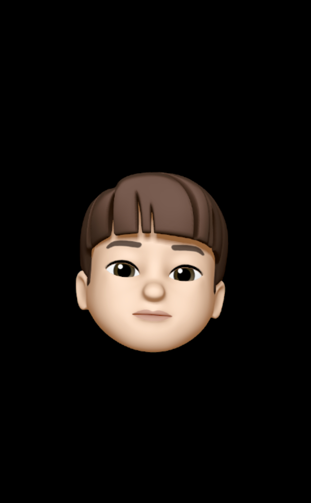

기술 스택
Front End : React, TypeScript, HTML5/CSS, Styled component
Back End : Spring, Java, 실시간 채팅 서버
시스템 엔지니어 : TCP/IP 소켓프로그래밍, AWS, Arduino, C, Linux
DB : MySQL
경력
졸업작품 프로젝트 - With U 펀딩 사이트 / 프론트엔드 개발 (2025.03 ~ )
∙ 요구사항 분석 및 전체적인 디자인
∙ TypeScript 기반으로 styled-components를 사용한 React
KBO 야구 정보 사이트 - API를 활용한 야구 정보 사이트
∙ TypeScript를 이용한 React
∙ API를 이용한 사이트 구현
실시간 채팅 프로젝트 - pThread를 활용한 채팅 서버 구현
∙ Raspberry PI의 Raspberry OS(Debian Linux)에서 pThread를 활용한 채팅 서버 구현
∙ TCP/IP Socket Programming
포트폴리오
졸업 작품 URL
https://github.com/DMU-NextLevel
KBO 야구 정보 사이트
https://github.com/chan1216/Bisson
교육
동양미래대학교 - 컴퓨터소프트웨어공학과 (2021.03 - )
수상 및 자격
ITQ MASTER – 2022년 4월
리눅스마스터 2급 – 2024년 10월
컴퓨터활용능력 1급 – 2025년 02월